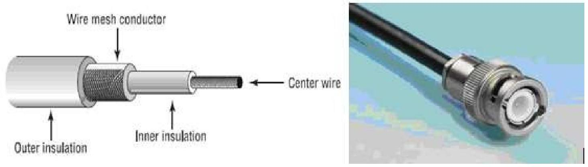
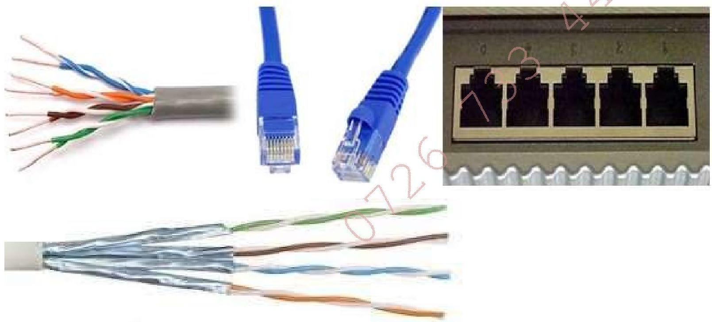
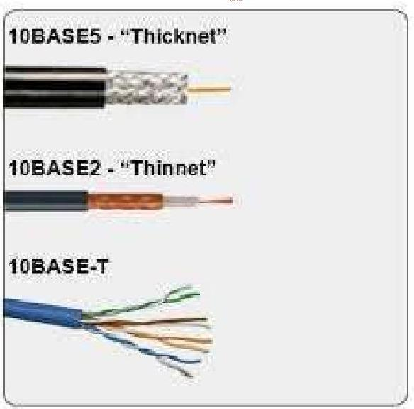
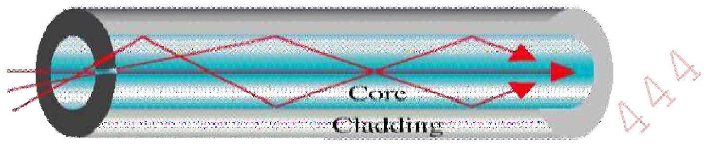
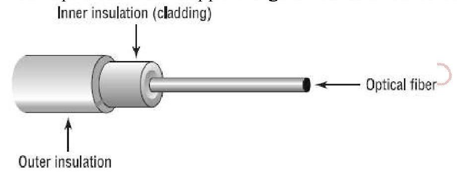
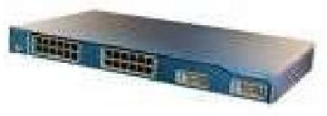
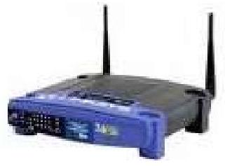
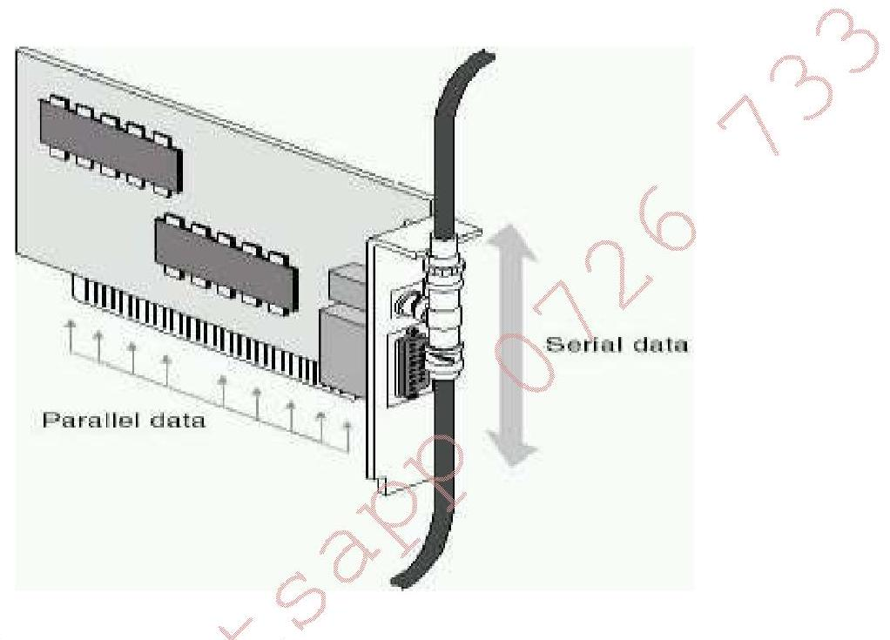
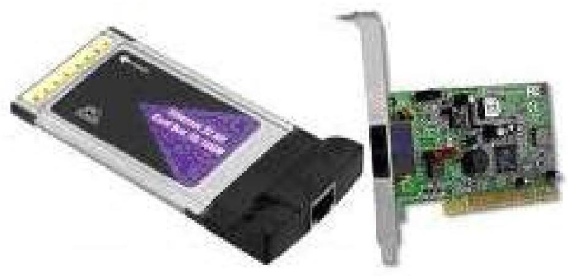
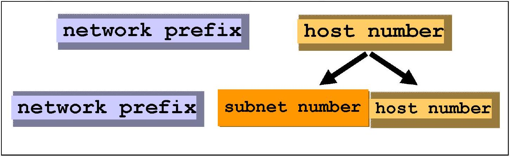

The two most popular types of network cabling are the 10BaseT (also known as twisted pair or Cat5), 10Base5 (also known as Thicknet) and thin coax (also known as 10Base2 or Thinnet). The "10" in 10Base5 stands for the 10 Mbps transmission rates while the "5" stands for the maximum distance of 500 meters to carry transmissions. The pairs are twisted together for the purposes of cancelling out electromagnetic interference (EMI) from external sources
10BaseT cabling looks like ordinary telephone wire, except that it has 8 wires inside instead of 4, transmits at 10 Mbps , with a maximum distance of 100 meters and physical star topology with a logical bus topology. There are basically two types of twisted-pair cabling: unshielded twisted-pair (UTP) and shielded twisted-pair (STP). UTP is simply twisted-pair cabling that is unshielded. In STP cables, each of the pair or collection of pair of wires that are twisted together are coated with an insulating coating that functions as a ground for the wires which protects the transmission line from electromagnetic interference leaking into or out of the cable.
Thin coax looks like the copper coaxial cabling that's often used to connect an aerial antenna to a TV set. The 10baseT/Cat5 cables have connectors that resemble a phone cord connector, only larger. These are called RJ-45 connectors. Coaxial cables are connected using BNC connectors.

10Base5 Cable and BNC Connector

10BaseT cable, RJ45 Connectors and their ports

Coaxial Cable
NB: The BASE is for baseband operation. Baseband is an adjective that describes signals and systems whose range of frequencies is measured from close to 0 hertz to a cut-off frequency (a maximum bandwidth or highest signal frequency); it is sometimes used as a noun for a band of frequencies starting close to zero.
RJ - Registered Jack
Fiber Optic Cables- signals are converted to light form and fired by laser or LEDs in bursts through insulated, thin glass or plastic fiber. Light bounces back and forth along the core. The pulses of light represent the 'on' state in electronic data representation. An optical fiber consists of a core (denser material) and a cladding (less dense material). In multi-mode fibres, as the name suggests, there are multiple modes of propagation for the rays of light. These range from low order modes which take the most direct route straight down the middle, to high order modes which take the longest route as they bounce from one side

Light Propagation in Multi-Mode Fiber
It provides transmission speeds from 100 Mbps up to 1 Gbps and a maximum distance of several miles. A small fiber-optic cable can support large amounts of voice conversation at the same time.

Fiber Optic cable
Advantages of Fiber Optic Cables
i.Immunity to Electromagnetic Interference
Although fiber optics can solve data communications problems, they are not needed everywhere. Most computer data goes over ordinary wires. Most data is sent over short distances at low speed. In ordinary environments, it is not practical to use fiber optics to transmit data between personal computers and printers as it's too costly. Electromagnetic Interference is a common type of noise that originates with one of the basic properties of electromagnetism. Magnetic field lines generate an electrical current as they cut across conductors. The flow of electrons in a conductor generates a magnetic field that changes with the current flow. Electromagnetic Interference does occur in coaxial cables, since current does cut across the conductor. Fiber optics are immune to this EMI since signals are transmitted as light instead of current. Thus, they can carry signals through places where EMI would block transmission.
ii.Data Security
There are no radiated magnetic fields around optical fibers; the electromagnetic fields are confined within the fiber. That makes it impossible to tap the signal being transmitted through a fiber without cutting into the fiber. Since fiber optics do not radiate electromagnetic energy, emissions cannot be intercepted and physically tapping the fiber takes great skill to do undetected. Thus, the fiber is the most secure medium available for carrying sensitive data.
iii.Non Conductive Cables
A serious concern with outdoor cables in certain computer networks is that they can be hit by lightning, causing destruction to wires and other cables that are involved in the network. Certain computer companies are aware of this problem and trying to solve it by having protective devices for wire circuits to block current and voltage surges. Any conductive cables can carry power surges or ground loops. Fiber optic cables can be made nonconductive by avoiding metal in their design. These kinds of cables are economical and standard for many indoor applications. Outdoor versions are more expensive since they require special strength members, but they can still be valuable in eliminating ground loops and protecting electronic equipment from surge damage.
iv.Eliminating Spark Hazards
In some cases, transmitting signals electrically can be extremely dangerous. Most electric potentials create small sparks. The sparks ordinarily pose no danger, but can be really bad in a chemical plant or oil refinery where the air is contaminated with potentially explosive vapours. One tiny spark can create a big explosion. Potential spark hazards seriously hinder data and communication in such facilities. Fiber optic cables do not produce sparks since they do not carry current.
v.Ease Of Installation
Increasing transmission capacity of wire cables generally makes them thicker and more rigid. Such thick cables can be difficult to install in existing buildings where they must go through walls and cable ducts. Fiber cables are easier to install since they are smaller and more flexible. They can also run along the same routes as electric cables without picking up excessive noise.
vi.High Bandwidth Over Long Distances
Fiber optics have a large capacity to carry high speed signals over longer distances without repeaters than other types of cables. Generally, coaxial cables have a bandwidth parameter of a few MHz/km, where else the fiber optic cable has a bandwidth of 400 MHz/km.
Disadvantages
-Cost - Optical fibers are expensive.
-Installation/maintenance is expensive - any crack in the core will degrade the signal, and all connections must be perfectly aligned.
Wireless Technology
i.Microwave Communications
Information is converted to a microwave signal, sent through the air to a receiver, and recovered. They use line-of-sight devices which must be placed in relatively high locations. Microwaves are electromagnetic waves which are "small" compared to waves used in typical radio broadcasting, in that they have shorter wavelengths.
ii.Satellite Transmission
Communications satellites are relay stations that receive signals from one earth station and rebroadcast them to another. They use microwave signals
iii.Infrared transmission
Involves sending signals through the air via light waves and requires line-of-sight and short distances (a few hundred yards). It is used to connect various computing devices. Infrared waves are electromagnetic radiation with longer wavelengths than those of visible light.
iv.Bluetooth
Bluetooth is a specification (IEEE 802.15.1) for the use of low-power radio communications to link phones, computers and other network devices over short distances without wires.
Bluetooth technology was designed primarily to support simple wireless networking of personal consumer devices and peripherals, including cell phones, PDAs, and wireless headsets. Wireless signals transmitted with Bluetooth cover short distances, typically up to 30 feet ( 10 meters).
Bluetooth devices generally communicate at less than 1 Mbps .
FACTORS TO CONSIDER WHEN CHOOSING TYPE OF MEDIA TO USE
1.Distance the media can successfully carry a signal
2.Environment in which the media is to be installed
3.Amount of data and the speed at which it must be transmitted
4.Cost of the media and installation
(b) Hub
The central connecting device is called a hub. A hub is a box that is used to gather groups of PCs together at a central location using cables. A hub simply passes all the information it receives so that all the devices connected to its ports receive the information. Hubs are mostly used in a small network (usually less than 30 hosts). Hubs connect LANs of similar technology or to extend the distance of one LAN. They can be called repeaters or amplifiers.
Advantages of using Hubs
i.They are inexpensive
ii.Easy to install
iii.Can connect different media
iv.Very little delay
Disadvantages
i.Limited distance between devices
ii.No protocol or rate conversion
iii.No error detection
iv.Does not filter packets
v.Can compromise data security
vi.Generates unnecessary network traffic
vii.A maximum of 30 devices
(c) SWITCH

Network Switch
The Switch is a more advanced unit over the basic hub. Unlike a hub, a switch will forward information/packets to the appropriate machine or port according to the address information on a particular packet. Switches are used on large networks in order to cut down the amount of unnecessary traffic being generated. They can use the same or different types of cable.
Advantages
i.Can convert protocols
ii.They enhance network performance
iii.Can be configured
iv.Enhances security- only destined device receives the packet.
i.It does filter packets
ii.Does error detection
Disadvantages
i.More expensive than hubs
ii.Higher maintenance demands
(d) Router

Router
Routers are highly intelligent devices that connect multiple network types. They:
a.They translate one network protocol and data format to another.
b.Determine the best path for sending data.
c.They route packets across multiple networks. They use routing tables to store network addresses to determine the best destination.
d.They are used to segment large networks.
e.They filter out noise.
f.They are normally used to connect one LAN to another. Typically, when a WAN is set up, there will be at least two routers used.
Their disadvantages include:
a.They are a bit slow because they are intelligent devices; as such, they analyze every packet, causing packet-forwarding delays.
b.Because of this intelligence, they are also more expensive.
Routing moves data on a hop-by-hop basis, what is often called 'hot potato' routing. If a set of routers ends up passing the data around in a circle, without reaching the destination, it's called a 'routing loop'. Packets get tossed around the loop until they die of old age: their 'Time To Live' counter in the IP datagram is decremented as it passes through each router and eventually it reaches zero and is discarded.
(e) Network Adapter Card
A computer is connected to the network through a network interface card, (also called a "NIC", "nick", or network adapter).
The functions of the NIC include:
i.Prepare data from the computer for the network cable. Data moves through a computer along paths called buses. These are actually several data paths placed side by side. Because the paths are side by side (parallel), data can move along them in lateral groups instead of in a single (serial) data stream. When data travels on a network cable it is said to be traveling as a serial transmission because one bit follows another.

Data Paths in a Computer
ii.Send the data to another computer.
iii.Controls data access to the cable by following specific rules.
iv.Receive incoming data from the cable and translate it into bytes that can be understood by the computer's central processing unit (CPU).

NIC Function
v. Servers
A sever is a computer system that provides essential services across a network, to private users inside a large organization or to public users in the internet. They typically are configured with additional processing, memory and storage capacity to handle the load of servicing clients.
Servers offer networks the capability of centralizing the control of resources and can thus reduce administrative difficulties. Servers perform several tasks. For example, servers that provide files to the users on the network are called file servers. Likewise, servers that host printing services for users are called print servers.
Servers can be Dedicated Servers/single-purpose are assigned to provide specific applications or services for the network, and nothing else. For instance, a file server or print server. Non-dedicated Servers/multi-purpose servers are assigned to provide one or more network services and local access. For example, a server can be both a file server and a print server at the same time.
(g) Network Operating Systems (NOSs)
PCs use a disk operating system that controls the file system and how the applications communicate with the hard disk. Networks use a network operating system (NOS) to control the communication with resources and the flow of data across the network. The NOS runs on the server. Some of the more popular network operating systems at this time include Unix, Novell's NetWare, and Microsoft's Windows NT Server (or Windows 2000).
(h) Gateways:
A gateway is a device used to connect networks using different protocols. Broadly, a gateway is any connection point or node on a network that provides access to a larger one and therefore a router is a gateway. They translate one network protocol and data formats to another. They can translate from network-to-network, system-to-network and system-to-system. Another example of gateway is a bridge.
(i) Workstations/Client Computers/Terminal
Workstations are the computers that the users on a network do their work on, performing activities such as word processing, database design, graphic design, e-mail, and other office or personal tasks. Workstations are basically nothing more than an everyday computer, except for the fact that they are connected to a network that offers additional resources. Workstations can range from a diskless computer system to a desktop system. In network terms, workstations are also known as client computers.
(k) Repeaters
These are network devices used to regenerate or replicate a signal distorted by transmission loss. They allow a cabling system to extend beyond its maximum allowed length by amplifying the network voltages so they travel farther. Repeaters are like amplifiers and, as such, are inexpensive.
Repeaters can only be used to regenerate signals between similar network segments.
(l) Bridges
A bridge is a hardware device for linking two networks that work with the same protocol. Unlike a repeater, which works at the physical level, a bridge works at both the physical and the logical levels, which means that it can filter frames so that it only lets past data whose destination address corresponds to a machine located on the other side of the bridge.
🔧How to configure a computer to work in a network.
1.First attach the RJ-45 connector to the Ethernet network port on your PC.
2.Go to Start Button, Control Panel, Network and Internet and then Network and Sharing Center.
3.Click on Change Adapter Settings on the left panel which will display several network connection icons e.g. Local Area Connection or Wireless Network Connection
4.Right click on the appropriate adapter, choose Properties to display Connection Properties window.
5.For most LANs, select the Internet Protocol 4 (TCP/IPv4). Highlight the protocol and choose Properties.
6.Select Obtain IP address and Obtain DNS Server Address both Automatically or enter the settings manually by clicking the radio button for Use the Following IP Address and enter the IP Address, Subnet Mask, and Default Gateway settings. You will also need to enter in your DNS server addresses as well.
7.Click on Ok button to apply the settings.
NOTE: Internet protocol 6 (TCP/IPv6) is also available in Windows Vista/7.
🔢Internet Protocol address (IP Addresses)
An Internet Protocol address (IP address) is a numerical label assigned to each device (e.g., computer, printer, router) participating in a computer network that uses the Internet Protocol for communication. IP addresses are binary numbers, but they are usually stored in text files and displayed in human-readable dotted decimal notations, such as 172.16.254.1
An IP address has two components, the network address and the host address. For example, consider the IP address 150.215.017.009. Assuming this is part of a Class B network, the first two numbers (150.215) represent the Class B network address, and the second two numbers (017.009) identify a particular host/device on this network.
Subnetting
Organizations have multiple networks which are independently managed and each is allocate a separate network address. Therefore, the host number portion of an IP address is split into a subnet number and a (smaller) host number. This result is a 3-layer hierarchy

IP Address Hierarchy with Subnetting
⌨️BASIC NETWORK COMMANDS
1. Ping:
Ping sends an ECHO_REQUEST packet to the specified host. If the host responds, you get an ICMP packet back which means the machine is up and connected to the network. You can "ping" an IP address to see if a machine is alive. If there is no response, you know something is wrong. E.g.
C: |> ping xxx.xxx.xxx.xxx e.g. ping 192.168.1.10
Allows you to ping another computer (the x 's represent the IP address of the computer you are attempting to ping). If this is not able to complete, this should relay back an unsuccessful message, which could be an indication of cable issues, network card issues, hub issue, etc
C: |> ping localhost
Pings the local host, this will allow you to see if the computer is able to send information out and receive the information back. Note that this does not send information over a network but may allow you to see if the card is being seen.
2. IPCONFIG
Ipconfig displays the network settings currently assigned and given by a network such as IP address, subnet mask and default gateway for each adapter bound to TCP/IP. This command can be utilized to verify a network connection as well as to verify your network settings.
To get all local network information for your computer use the /all switch as shown below, followed by the results that would be seen when using this command.
C: \> ipconfig /all
3. Pathping/Tracert
Pathping is designed for environments in which one or more routers exist between hosts. It sends a series of packets to each router that's in the path to the destination host in an effort to determine whether the router is performing slowly or dropping packets.
E.g. pathping 192.168.1.10
Example Results might be:
1 3ms 1ms 1ms 192.168.0.1 (to the router)
2 4ms 1ms 1ms 192.168.1.10 (to the proxy server)